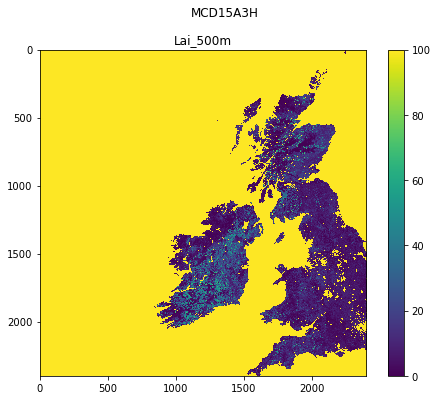
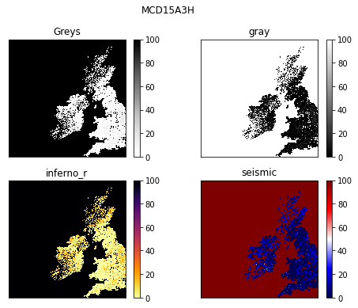

024 Image display
Purpose
We have seen from 021 Streams and 022 Read write files how to access both text and binary datasets, either from the local file system or from a URL and in 023 Plotting how to use matplotlib for plotting graphs.
In this section, we will learn how to view images using matplotlib.
You might follow these notes up by looking at the Python package folium for interactive displays.
Prerequisites
You will need some understanding of the following:
- 001 Using Notebooks
- 002 Unix with a good familiarity with the UNIX commands we have been through.
- 003 Getting help
- 010 Variables, comments and print()
- 011 Data types
- 012 String formatting
- 013_Python_string_methods
- 020_Python_files
- 021 Streams
- 022 Read write files
- 023 Plotting
Test
You should run a NASA account test if you have not already done so.
Read and plot a dataset
MODIS
We have seen in 022 Read write files how we can access a MODIS dataset. In an exercise we wrote a function get_data that returned a dictionary of spatial datasets, given a MODIS HDF filename. Here, we will use the similar function modis.get_data that returns the same form of data dictionary, but driven by the year and day of year (doy). The product and other parameters are specified in the keyword arguments. We will look into MODIS products in more detail in a subsequent session. In this session, we will use MCD15A3H and
For example, to get the LAI product MCD15A3H and the land cover product MCD12Q1, layer LC_Type1 to visualise. Many of these datasets are pre-cached for you, so you should get a fast response. If the plotting seems to be taking too long, set verbose=True in the kwargs to get details of the underlying processing.
First then, we access the product MCD15A3H. This is produced every 4 days in a year, so in specifying doy, we use doy=4*n + 1 for the nth dataset of the year.
from geog0111.modis import Modis
kwargs = {
'product' : 'MCD15A3H',
'tile' : ['h17v03'],
}
modis = Modis(**kwargs)
# specify day of year (DOY) and year
data_MCD15A3H = modis.get_data(2019,1+4*10)
# loop over dictionary items
for k,v in data_MCD15A3H.items():
if k in modis.sds:
# do some neat formatting on k
print(f'{k:<20s}: {v.shape}')
FparExtra_QC : (2400, 2400)
FparLai_QC : (2400, 2400)
FparStdDev_500m : (2400, 2400)
Fpar_500m : (2400, 2400)
LaiStdDev_500m : (2400, 2400)
Lai_500m : (2400, 2400)
So any of these datasets, data[Fpar_500m], data[Lai_500m] are two dimensional datasets ((2400, 2400)) that we might display as images. For example data[Lai_500m].
We follow much the same recipe as for plotting line graphs, but instead of using axs.plot() we use axs.imshow(). Further, we can set the subplot title with axs.set_title(k) as before. We can usefully include a colour wedge with the plot with fig.colorbar(im, ax=axs).
When we plot with axs.imshow(), we can optionally use the keywords vmin= and vmax= to set upper and lower thresholds for the data plotted.
You should generally use interpolation='nearest' when plotting an image dataset as a measurement (e.g. a remote sensing dataset), otherwise it may be interpolated.
import matplotlib.pyplot as plt
k = 'Lai_500m'
name = f'{kwargs["product"]}'
# plot size
x_size,y_size = 8,6
shape = (1,1)
fig, axs = plt.subplots(shape[0],shape[1],figsize=(x_size,y_size))
# dont flatten if shape is (1,1)
if shape[0] == 1 and shape[1] == 1:
axs = [axs]
else:
axs = axs.flatten()
# set the figure title
fig.suptitle(name)
# plot image data: use vmin and vmax to set limits
im = axs[0].imshow(data_MCD15A3H[k],\
vmin=0,vmax=100,\
interpolation='nearest')
axs[0].set_title(k)
fig.colorbar(im, ax=axs[0])
<matplotlib.colorbar.Colorbar at 0x7f5510d470d0>

Exercise 1
- Plots the first datasets in
data_MCD15A3Has subplots in a 2 x 2 shape.
Hint: Use a loop for the keys of data_MCD15A3H. Set up the 2 x 2 subplots with:
fig, axs = plt.subplots(2,2,figsize=(x_size,y_size))
axs = axs.flatten()
then you can refer to the subplot axes as ax[0], ax[1], ax[2] and ax[3] when you loop over the keys. Don't forget to increase x_size,y_size appropriately.
Colourmaps
As you would expect, you can customise your plots. We illustrate this by changing the colourmap used here in a pseudocolour display of the data. For some others, please see the matplotlib tutorial.
There are various ways to set the colour map, but when working with sub-images, trhe easiest is of the form:
im = ax.imshow(data)
im.set_cmap(c)
where c here is some colourmap.
For further discussions on colourmaps and options see the relevant tutorial and the colour map reference.
In this set of sub-plots, we switch off the image ticks for a clearer plot.
import matplotlib.pyplot as plt
k = 'Lai_500m'
name = f'{kwargs["product"]}'
# plot size
x_size,y_size = 8,6
shape = (2,2)
fig, axs = plt.subplots(*shape,figsize=(x_size,y_size))
# dont flatten if shape is (1,1)
if shape[0] == 1 and shape[1] == 1:
axs = [axs]
else:
axs = axs.flatten()
# this new cmd switches off the tick
plt.setp(axs, xticks=[], yticks=[])
# set the figure title
fig.suptitle(name)
cmaps = ['Greys','gray','inferno_r','seismic']
for i,c in enumerate(cmaps):
# plot image data
im = axs[i].imshow(data_MCD15A3H[k],\
vmin=0,vmax=100,\
interpolation='nearest')
im.set_cmap(c)
axs[i].set_title(c)
fig.colorbar(im, ax=axs[i])

Exercise 2
- write a function called
im_displaythat takes as input:- a data dictionary
- a list of keywords of datasets to plot
- optionally:
- a title
- a colourmap name
- lower and upper limits for plot data (vmin, vmax)
- x_size,y_size
- subplots shape : e.g. (2,2)
You should assume some default values for the optional items if not given. For the subplots shape, assume it is (n,1) where n is the length of the keyword list.
You should set the default values of vmin and vmax to None, as this just then takes the dataset default minimum and maximum.
Your code should be well-documented.
- test your code
Note that you will have to experiment a bit with the x_size,y_size values to get a good plot. It is not easy to automate that.
Quantised data: Land Cover
Sometimes we want quantised colourmaps, for example for a land cover classification map. You can do these perfectly well in matplotlib, but the process is a little more involved.
We will take as an example the MODIS product MCD12Q1 over the UK. The land cover layer we are interested in is called LC_Type1. The land cover names associated with this are given in the file data/LC_Type1_class.csv, along with example colour mappings.
import pandas as pd
lc_Type1 = pd.read_csv('data/LC_Type1_colour.csv')
lc_Type1
| code | class | colour | |
|---|---|---|---|
| 0 | -1 | Unclassified | black |
| 1 | 1 | Evergreen_Needleleaf_Forests | darkgreen |
| 2 | 2 | Evergreen_Broadleaf_Forests | darkolivegreen |
| 3 | 3 | Deciduous_Needleleaf_Forests | green |
| 4 | 4 | Deciduous_Broadleaf_Forests | lightgreen |
| 5 | 5 | Mixed_Forests | yellow |
| 6 | 6 | Closed_Shrublands | blue |
| 7 | 7 | Open_Shrublands | tan |
| 8 | 8 | Woody_Savannas | brown |
| 9 | 9 | Savannas | khaki |
| 10 | 10 | Grasslands | springgreen |
| 11 | 11 | Permanent_Wetlands | cyan |
| 12 | 12 | Croplands | red |
| 13 | 13 | Urban_and_Built_up_Lands | grey |
| 14 | 14 | Cropland_Natural_Vegetation_Mosaics | violet |
| 15 | 15 | Permanent_Snow_and_Ice | snow |
| 16 | 16 | Barren | sienna |
| 17 | 17 | Water_Bodies | navy |
The process of setting up a colourmap is explained in this Earth Lab page.
The three steps are:
* set up colour names associated with the class names
* generate matplotlib cmap and norm objects from these
* set up the legend
We can choose colour names from the matplotlib gallery if we don't like the defaults set up.
It is an annual dataset, with only valid files for January 1st of the year.
from geog0111.modis import Modis
# UK
kwargs = {
'tile' : ['h17v03', 'h18v03'],
'product' : 'MCD12Q1',
}
year = 2019
# get the data
modis = Modis(**kwargs)
# specify day of year (DOY) and year
data_MCD12Q1 = modis.get_data(year,1)
# generate matplotlib cmap and norm objects from these
import matplotlib
cmap = matplotlib.colors.\
ListedColormap(list(lc_Type1['colour']))
norm = matplotlib.colors.\
BoundaryNorm(list(lc_Type1['code']), len(lc_Type1['code']))
import matplotlib.patches
# set up the legend
legend_labels = dict(zip(list(lc_Type1['colour']),list(lc_Type1['class'])))
patches = [matplotlib.patches.Patch(color=c, label=l)
for c,l in legend_labels.items()]
# plot
import matplotlib.pyplot as plt
x_size,y_size = 12,12
fig, axs = plt.subplots(1,figsize=(x_size,y_size))
im = axs.imshow(data_MCD12Q1['LC_Type1'],cmap=cmap,norm=norm,interpolation='nearest')
plt.legend(handles=patches,
bbox_to_anchor=(1.4, 1),
facecolor="white")
<matplotlib.legend.Legend at 0x7f5510f4f950>

Exercise 3
- Write a function called
plot_lcthat takes as input modis land cover dataset and plots the associated land cover map - You might use
x_size,y_sizeas optional inputs to improve scaling
Summary
In this section, we have learned how to plot images from datasets we have read in or downloaded from the web. We have concentrated on MODIS datasets, stored in a data dictionary. We used modis.get_data to load the MODIS datasets. We developed a function called im_display to provide a simple wrapper for plotting.
We have also looked into how to do categorised mapping, for example for land cover, and written a function called plot_lc to achieve this.